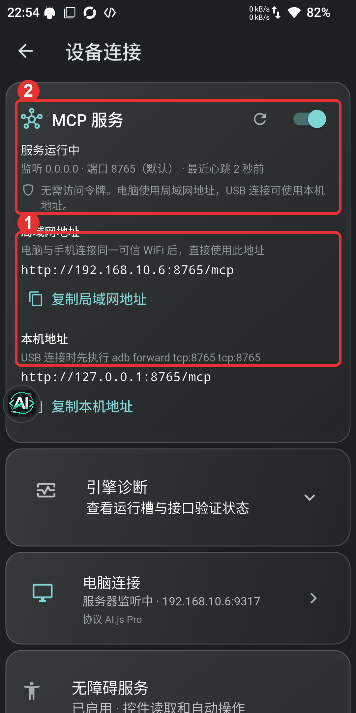
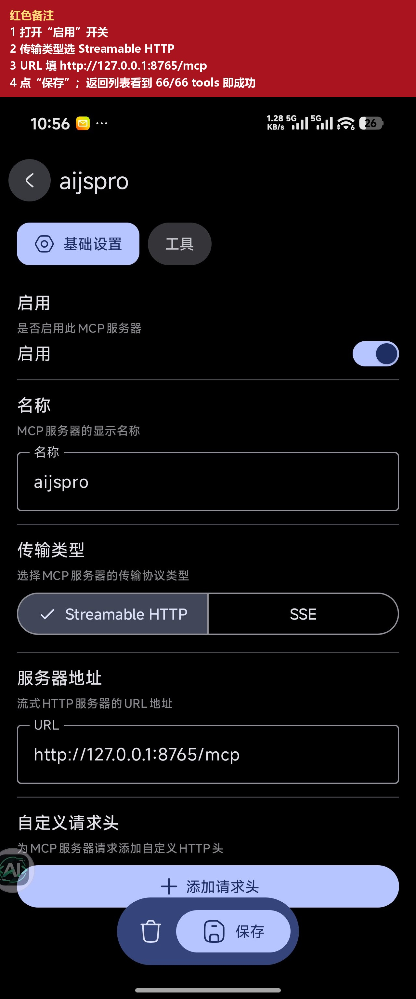
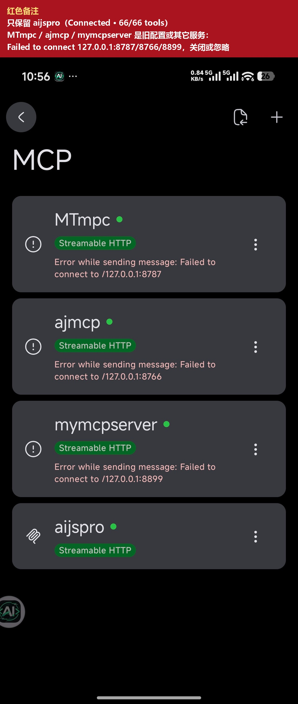
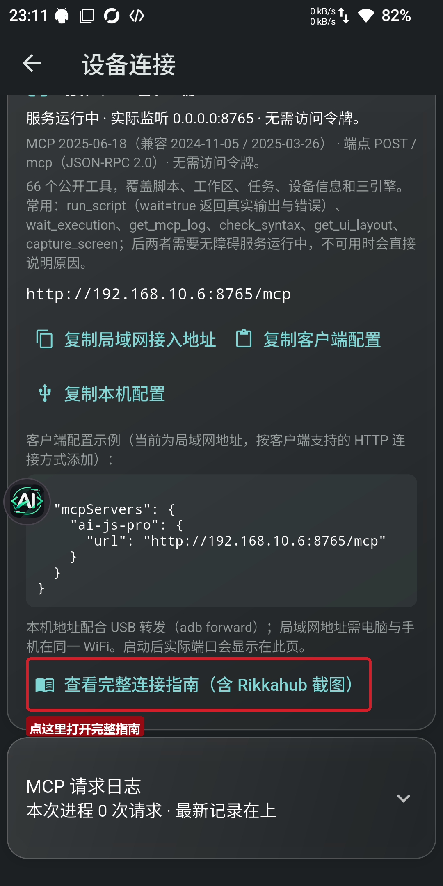

手机 AI.js Pro ↔ 电脑 / Rikkahub 的本地说明。本页随 App 内置，不依赖网络。
左上角菜单 → MCP 服务 → 打开开关，状态变成“服务运行中”。默认监听 0.0.0.0:8765，被占用时自动向后顺延。

红色重点：先确认“服务运行中”，再复制局域网地址；USB 连接先执行 adb forward tcp:8765 tcp:8765。
客户端需支持 HTTP MCP / Streamable HTTP；服务器名填 ai-js-pro，URL 用手机页面显示的地址：
http://<手机IP>:8765/mcp
通用配置示例：
{
"mcpServers": {
"ai-js-pro": {
"url": "http://192.168.10.6:8765/mcp"
}
}
}
MCP 当前免访问令牌；只在可信局域网使用，不要把 8765 暴露到公网。
同一台手机不需要 ADB，也不用 WiFi，直接填本机地址：
http://127.0.0.1:8765/mcp
aijsprohttp://127.0.0.1:8765/mcp
红色备注：① 开启启用 ② 选 Streamable HTTP ③ 填 127.0.0.1:8765/mcp ④ 保存；返回列表看到 Connected / 66/66 tools 即成功。

只保留 aijspro；MTmpc / ajmcp / mymcpserver 的 Failed 是旧配置或本地其它服务（8787/8766/8899），关闭或忽略。
如果 Rikkahub 在另一台手机或电脑：同一 WiFi 用局域网地址；USB 用 adb forward 后填 127.0.0.1。
“设备连接 → 接入 AI 客户端”底部也有一个按钮，点开就是本页：

learn_autojs_skill，再调 get_status / list_engines。run_script 用 wait: true 才能返回真实输出与错误。get_ui_layout / capture_screen / ui_* / app_* 需要无障碍服务。adb forward。